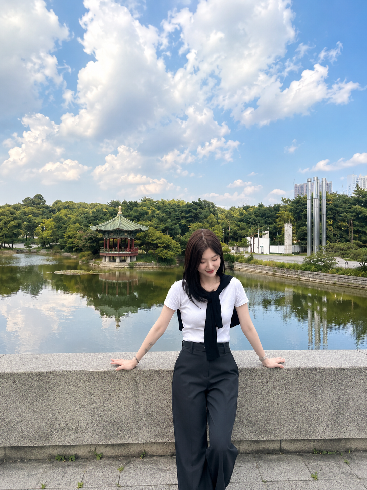
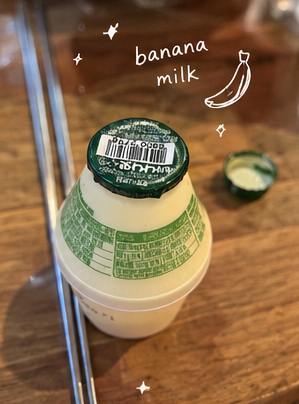

☁️🫧✨
☁️
✨
🎀
little things
little things
from this week
AUG 03 — AUG 09 · a week of refresh, laughter & inspiration
🍌 + 🥛 + 🥂 = chaos & joy ☺

One of those nights with my favorite unnie — banana milk, drinks, too much laughing, and enough alcohol to completely let go for a while. Messy, funny, and exactly the kind of reset I needed.
museum day · inspiration unlocked ✨
My husband and I spent the day walking through Korean history — from prehistoric life to the Joseon Dynasty. Seeing objects that survived centuries gave me a kind of inspiration I don’t usually make space for.
today’s little note 💌
♡
take my time.
enjoy the process.
let ordinary days surprise me.
this week gave me back a little room to breathe.
this week, i’m grateful for…
♡ laughing until I cried with someone I love
♡ learning more about Korean history and culture
♡ good food and full stomachs
♡ a clear blue sky and slow walks
♡ inspiration that arrived when I wasn’t looking for it